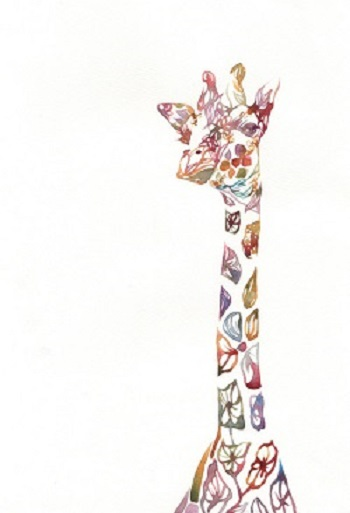

身份只是暂时的标记 |
 |
英国著名的剧作家萧伯纳到莫斯科旅游，在街上遇见了一位聪慧的小女孩，两人十分投缘，站在街头天南地北的聊了很 临分别时，萧伯纳对小女孩说：“回去告诉你妈妈，今天你在街上和世界名人萧伯纳聊了很久。” 小女孩抬头看了萧伯纳一眼，也学着他的口气说：“回去告诉你妈妈，你今天和漂亮的苏联小姑娘安娜聊了很久。” 这回答让萧伯纳大吃一惊，他马上就意识到自己的自傲是不当的。 萧伯纳颇有感触的说：“一个人不管有多大的成就或地位，对任何人都应平等对待，要保持谦虚。这是苏联小女孩安娜给我的教训，我会一辈子都记得。” 亲爱的，我们是不是也和萧伯纳一样呢?常常会在无意中显露自己的优越感。 名位身份只是暂时的标记，不一定永远跟着我们，没什么好值得骄傲的。一个真正成功的人，必是谦冲为怀，绝不会因名位 而骄狂自大。 |
|
| ——————————————————下一个 小朋友的理想 |